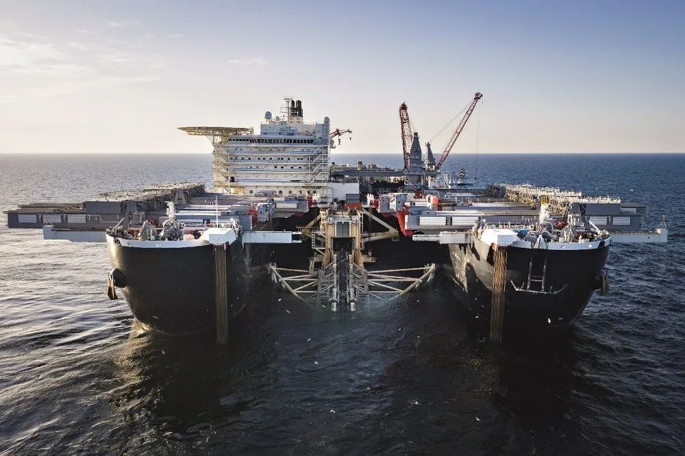

疫情期下的石油公司：油卖不动，口罩原材料和蔬菜成热搜
原文链接 备份链接 图片来源：视觉中国 记者：侯瑞宁 编辑：张慧 “ 随着新冠肺炎疫情在全球范围相继爆发，给国际石油市场带来了新的不确定性。 ” 加油站老板甄荣的苦闷终于缓解了一些。 “昨天，加油站的汽油销售量开始上升了。”2月23日，甄 …

中国要想进入世界天然气第一梯队并在天然气定价权上有所作为，就要认真借鉴欧美和俄罗斯的经验教训，真正发挥市场在资源配置中的决定性作用

世界最大海上铺管船瑞士Allseas公司的Pioneering Spirit在瑞典专属经济区铺设北溪2管道（摄于2019年2月）。图/北溪2管道公司
文 | 白俊
国际竞争与合作中大国具有更大的影响力和话语权，大国博弈主导了国际秩序的发展方向。
这在天然气领域也是一样，全球天然气市场的发展虽然会受到所有参与国的影响，但大国之间的博弈决定了国际天然气市场的基本发展方向，天然气市场的发展又可能成为大国之间多方位博弈的筹码。
全球天然气市场的三个梯队
全球天然气资源分布的不均衡性决定了供应来源的不均衡性。虽然天然气资源分布比石油更为分散，但主要供应来源集中在北美、俄罗斯、中亚、中东和大洋洲等地，实际产出能力则会受到多方面因素的影响。天然气消费的多寡一方面与资源禀赋、人口、产业和经济承受力等因素有关，另一方面则受制于利用技术、体制和政策等影响。没有天然气液化、船运和气化技术，日本不会成为最大的液化天然气消费国。没有“煤改气”行动和补贴政策，中国近几年天然气消费量不会出现高速增长。随着时间的推移，不同天然气供应方的市场影响力会出现起伏变化，不同天然气消费国的市场影响力也会出现调整，导致全球天然气市场出现新的不均衡发展。
全球天然气市场按生产和消费规模可以大致划分为三个梯队，第一梯队是5000亿立方米俱乐部成员，包括美国、俄罗斯和欧盟。美国天然气年生产和消费量都超过8000亿立方米，俄罗斯年生产超过6000亿立方米、年消费超过4000亿立方米，欧盟年消费大约5000亿立方米、生产超过1000亿立方米，三者合计生产量超过全球40％，消费量达到全球45％左右，它们是全球天然气市场的核心。
第二梯队是天然气市场重要参与者，生产或消费规模大致在1000亿立方米至3000亿立方米之间，其中又可以分为两个层级，一类与国际市场关联度大，需要通过国际贸易才能达到自己的生产或消费目标，包括中国、日本、卡塔尔、澳大利亚、挪威、加拿大，另一类国际市场关联度小，基本自产自销，包括伊朗和沙特。
其他天然气生产和消费国大致属于第三梯队，虽然每一个国家天然气市场体量不是特别大，但有的对国际市场依赖也比较大，包括韩国、土库曼斯坦、阿尔及利亚、印度等。全球天然气市场的发展受第一梯队影响最大，美国、俄罗斯和欧盟之间的博弈是影响全球天然气市场发展的主线。
俄欧天然气博弈
欧洲中西部天然气资源和产量有限，并且主力产区北海和荷兰格罗宁根气田产量近年来持续下降，不能满足欧盟国家天然气消费需求。除了阿尔及利亚、利比亚的管道气以及海上进口LNG，欧盟最主要的天然气供应来自俄罗斯，现在俄罗斯每年出口欧盟的天然气接近欧盟总供应量的40％。对保加利亚、捷克、爱沙尼亚、拉脱维亚、匈牙利、奥地利、波兰、罗马尼亚、斯洛文尼亚和芬兰等国家而言，俄罗斯天然气供应量占比甚至超过四分之三。
俄罗斯供应欧盟成员国的主要过境输送通道是乌克兰，2018年过境乌克兰天然气数量约870亿立方米；其次是通过波罗的海的北溪管道，输送能力550亿立方米，2018年已经满负荷；第三是途经波兰的亚马尔-欧洲管道，输送能力330亿立方米。在南边俄罗斯有一条160亿立方米的蓝溪管道直达土耳其。
欧盟不少成员国对过度依赖俄罗斯天然气有疑虑，尤其是在乌克兰和俄罗斯数次纷争打乱天然气正常供应后，欧盟也做出多种努力保障天然气供应安全。除了发展本地可再生能源、提高能源利用效率和推进市场化改革，欧盟也试图通过扩大LNG接收能力、加强管网互联和储气设施建设、提供项目融资支持等方式增加天然气供应能力。欧盟希望建立一个南部天然气走廊，从里海盆地、中亚、中东和东地中海盆地进口800亿－1000亿立方米的天然气，重点帮助欧洲中部和东南部国家增加新的气源，不过进展并不顺畅。
俄罗斯天然气巨头Gazprom在北溪管道2012年全面投产的同时，启动了北溪2号管道可行性研究，计划再增加550亿立方米输气能力，2015年拉拢德国、奥地利、法国及荷兰的公司，签署了北溪2号管道的财务投资合作协议。北溪2号管道建设2018年开始并计划2019年底投产，意在衔接俄罗斯与乌克兰过境运输协议的到期，减少通过乌克兰的输送量。受过境丹麦审批滞后及美国制裁等因素影响，俄方预计北溪2号管道2020年中投入使用。
2019年12月俄罗斯、乌克兰和欧盟委员会多次磋商协调后达成了新的过境协议，未来俄罗斯过境乌克兰出口欧盟的天然气数量将逐步降低，2020年过境650亿立方米，2021年－2024年降至每年400亿立方米。
此外，2017年Gazprom在南部黑海启动了输送能力315亿立方米的土耳其溪管道建设，计划其中一半输送能力用于供应欧洲，该管道2019年12月19日已经完成注气，预计2020年初投产。通过这些新建管道基础设施，俄罗斯将巩固其在欧盟区天然气市场上的供应能力和地位。
欧盟是全球应对气候变化和发展可再生能源的急先锋，其能源需求已大致见顶。2019年12月推出了“绿色政纲”，确定了2050年实现碳中和的目标。虽然天然气在一些成员国已经不那么受待见，但欧盟还离不了天然气，尤其是在区域内天然气产量下降的情况下，未来一段时间进口更多天然气是大概率事件。俄罗斯作为近邻，天然气资源丰富、供应能力强且供给成本具有竞争力，欧盟脱离俄罗斯天然气完全不现实。2014年乌克兰克里米亚事件后，欧盟对俄罗斯发起了外交和经济制裁，但也有意避开了天然气领域。
美俄天然气博弈
苏联解体后，继承其衣钵的俄罗斯元气大伤，但强硬的俄罗斯在地缘政治角逐、外交和军事等领域仍然是美国的强劲对手。美国政府视欧洲能源安全为美国的国家利益，支持打造南部天然气走廊、促进欧洲天然气供应多元化、减少对俄罗斯天然气的依赖，是美国在欧洲和欧亚地区能源政策的核心。不过南部天然气走廊收效有限，不能撼动俄罗斯在欧盟成员国天然气供应的核心地位。
随着美国页岩油气革命的成功，美国能源市场格局彻底改变，能源独立正在变成现实，美国对外能源战略和政策也在悄然发生变化。
2011年，美国成为全球最大天然气生产国，2017年变成天然气净出口国。根据美国能源信息署的预计，由于国内产量增长过快和出口设施快速建设，未来十年美国LNG出口将急剧增加。美国政府近两年大力游说欧盟成员国购买美国天然气，称美国天然气是“自由气”，可以帮助欧盟成员国免遭俄罗斯的天然气绑架。这两年美国出口欧盟天然气数量快速增加，但和俄罗斯供应欧盟数量相比仍然很小。根据欧盟统计，2017年欧盟从美国进口22亿立方米天然气，2018年增至33亿立方米，2019年跃升至136亿立方米，预计2023年会增至216亿立方米。
另一方面，美国也在试图遏制俄罗斯的天然气出口项目，先后制裁俄罗斯LNG项目的融资、技术装备和船运，既满足美国打压俄罗斯的战略需要，又帮助美国LNG寻找出口市场，达到一箭双雕的效果。不过此举收效甚微，不仅俄罗斯亚马尔LNG项目实现提前投产，出口到欧盟市场，而且北极2 LNG项目也在稳步推进。美国多次指责北溪2号管道削弱欧洲能源安全，并威胁要进行制裁。2017年美国通过了《以制裁反击美国对手法案》，其中包含制裁参与俄罗斯能源出口项目企业的计划。
2019年12月18日，美国参议院批准2020年《国防授权法案》，其中明确制裁北溪2号管道和土耳其溪管道工程服务企业和有关个人。在美国总统川普12月21日签署该法案当天，北溪2号管道主要铺设方瑞士Allsea公司宣布因此停止铺管作业。俄罗斯方面表示将反制美国，并会全力以赴推动项目完工。由于具有丰富经验的深水铺管作业企业不多，制裁会给项目带来困难，但由于制裁来得太晚，这只会推迟项目投产，难以完全终止项目。
美欧天然气博弈
美国和欧盟是传统盟友，在法治、民主、人权、自由企业制度等方面有共同的价值观，政治经济上也互相依赖，不过美欧双方对很多问题的意见也不尽相同，目前美国和欧盟双方在经贸、国际事务、应对气候变化等领域都存在分歧。为了丰富能源供应来源，欧盟乐意进口美国天然气，减少对俄罗斯的依赖，同时也希望美国天然气要有价格竞争力，不能让欧盟成员国增加消费支出。
欧盟内部对美国的看法意见也不一致，天然气需求量小的中东欧国家希望美国在欧洲能源问题上扮演更大角色，更多介入欧洲事务，对冲俄罗斯的影响力，如果能进口更多美国天然气，哪怕是付出点额外代价，也要减少对俄罗斯的依赖，波兰和立陶宛因此都修建了LNG接收站。
天然气需求量大的西欧国家对美国天然气没有那么热心，对进口LNG是否具有经济性的考虑较多。一方面希望多元化来源对冲俄罗斯的影响，但也难以完全抗拒俄罗斯天然气距离近气量大价格稳的诱惑，德国长期以来对建LNG进口接收站的想法不温不火，是西欧主要天然气消费国中唯一没有建LNG接收站的国家，2019年才真正把这件事提上议事日程。另一方面，乌克兰等中东欧国家利用天然气过境增加了和俄罗斯的讨价还价能力，但这无疑是把西欧国家的天然气需求当成了筹码，危及西欧国家天然气供应安全，通过北溪2号管道绕道而行有助于解决西欧国家的现实利益诉求，美国的制裁无疑封堵了西欧国家认可的一条出路。
对于美国制裁北溪2号管道相关企业，乌克兰、波兰和立陶宛等中东欧国家表示欢迎，德国政府则强烈不满。德国外交部长马斯（Heiko Maas）2019年12月18日表示，欧洲能源政策必须由欧洲来决定，而不是由美国决定，“我们坚决拒绝外部干涉，反对具有域外效力的制裁”。参与北溪2号管道融资的法国、奥地利、荷兰等国家也对美国的做法心存不满，预计不会就此听从美国的安排。
天然气市场三个梯队格局的变动趋势
俄罗斯是欧盟天然气市场的传统主力供应商，乐见欧盟区域本地供应下降，进而利用自己的资源优势和管输能力，扩大销售；欧盟认可俄气的多重现实优势，但对过度依赖引发的供应安全问题存在担心，主张多元化气源，扩大LNG接收能力。
同时欧盟对可再生天然气和氢气的发展情有独钟，天然气脱碳已经提上议事日程，区域内化石天然气需求的长期增长潜力将会受到抑制。美国要大量出口LNG，欧盟是相对亚洲更近的需求市场，支付能力强，美国也是志在必得。
俄美欧三方博弈增加了天然气市场的竞争，竞争带来的效率提升和消费者福利改善将会外溢到其他区域天然气市场，有利于全球天然气市场发展。
欧盟致力于推进天然气市场化改革，欧洲挂钩石油的天然气定价方式已经逐渐退出，气气竞争的格局逐步形成，再加上美国比较成熟的天然气市场化定价和新型LNG贸易模式的冲击，全球天然气定价正在向更加市场化的方向演进，区域间的价差被拉低，市场联动性逐步增强，天然气开始向下一个流动性强的能源大宗商品转变。
由于坚持市场竞争的政策取向和制度建设，北美和欧洲已经成为区域价格发现中心，俄罗斯虽然贵为天然气第一梯队成员，在管道气出口市场地位显赫，在LNG供应上也大有后来居上的态势，却无法形成一个被市场接受的标杆价格，在欧洲销售只能随行就市。
天然气市场三个梯队格局的变动趋势
天然气三个梯队的发展格局会长期稳定，从一个梯队跃升到另一个梯队虽有可能，但只有极少数国家能做到，并且也需要一个长期过程。美国和俄罗斯将长期处于天然气第一梯队阵营，会力图扩大天然气供应能力，迎接天然气市场的下一场需求狂欢。
按照欧盟2050年实现碳中和的目标，欧盟化石天然气需求将走向长期下行的道路，而在欧盟尚未全身退出第一梯队时，中国将迎头赶上，加入天然气第一梯队俱乐部。中国将是唯一一个能快速实现这种转变的国家，其他处于第二梯队的国家难有跃升至第一梯队的可能。
日本的天然气需求难有大的增量，卡塔尔、加拿大和澳大利亚作为重要国际供应方有增供潜力，也难以跻身第一梯队。受制于政治经济国际关系等多方面约束，坐拥丰富天然气资源的伊朗难以做大。处于天然气第三梯队的印度存在很大的需求想象空间，进入第二梯队不是一件难事，但由于经济、资源和制度等原因，离天然气第一梯队仍将遥不可及。东非和东地中海盆地等地的天然气发现有利于扩大全球天然气供应，不过目前来看没有任何一个国家能因此跃升至第一梯队，对全球天然气市场产生重大影响。
对中国天然气市场发展的启示
和北美、欧洲及俄罗斯等早已进入油气时代不同，中国依然处于煤炭时代，中国的能源转型有自己的特点，减少对煤炭的过度依赖是中国能源转型和实现能源高质量发展的核心内容。天然气作为最清洁低碳的化石能源，通过市场竞争实现降成本和增供应，市场规模将不断扩大，成为中国能源转型过程的有力支撑。
中国天然气消费市场的扩大需要国内国外两方面形成合力，在国内需要通过深化改革，释放国内供应潜力；在国际上要充分利用全球天然气市场大国博弈带来的良好机遇，加大天然气引进力度。中俄东线天然气合作2019年终于开花结果，既与中国需求和俄罗斯供应匹配度高有关，也得益于俄罗斯与欧美博弈的助推作用。
政治外交博弈影响国际天然气市场的合作与竞争，但经济性力量始终是根本因素。要鼓励和支持国内企业参与国际天然气投资和贸易，借助各种组织和渠道，倡导和促进全球天然气市场的进一步融合发展，研讨天然气大国合作的新机制和新模式。
如果中国在进入第一梯队的同时希望在天然气价格发现方面发挥更积极的作用，就要认真借鉴欧美发展经验和俄罗斯的教训，通过建立和完善天然气行业的市场化体制，用制度化的方式增强人们对市场的信心，真正发挥市场在资源配置中的决定性作用。
（作者为北京燃气集团研究院副院长；编辑：马克）

▲点击图片查看更多疫情报道
责编 | 黄端 duanhuang@caijing.com.cn
本文为《财经》杂志原创文章，未经授权不得转载或建立镜像。如需转载，请在文末留言申请并获取授权。
原文链接 备份链接 图片来源：视觉中国 记者：侯瑞宁 编辑：张慧 “ 随着新冠肺炎疫情在全球范围相继爆发，给国际石油市场带来了新的不确定性。 ” 加油站老板甄荣的苦闷终于缓解了一些。 “昨天，加油站的汽油销售量开始上升了。”2月23日，甄 …
原文链接 备份链接 图片来源：Wikimedia Commons 记者：肖恩 “ 有专家认为，检测人数少是美国目前确诊病例不多的原因。 ” 疑似首例新冠肺炎社区传播病例让美国提高了警惕，疾病控制与预防中心（CDC）也为此修改检测标准。但 …
原文链接 备份链接 目前包括中国大陆在内，全球已经有41个国家和地区出现了疫情，其中，韩国是中国大陆之外疫情蔓延最快的国家。 尽管如此，世卫组织不希望在“没有谨慎和清晰地分析事实情况之前”仓促宣布疫情为全球“大流行病” 文 |《财经》特派 …
原文链接 备份链接 图片来源：IC Photo 记者：王磬 “ 尽管“全球大流行”听上去比“流行病”更严重，但这种严重加剧主要是指传播规模（scale），而不是该疾病本身的激烈程度（severity） ” 过去几天，意大利突然激增的新冠肺 …
原文链接 备份链接 疫情持续在中国境外蔓延会恶化市场情绪，美欧股市最近两天持续下跌与此有关。展望未来，资本市场持续上行的希望在于：中国疫情防控企稳，世界其他地区迅速协调行动 文 |《财经》特派华盛顿记者 金焱 《财经》 …